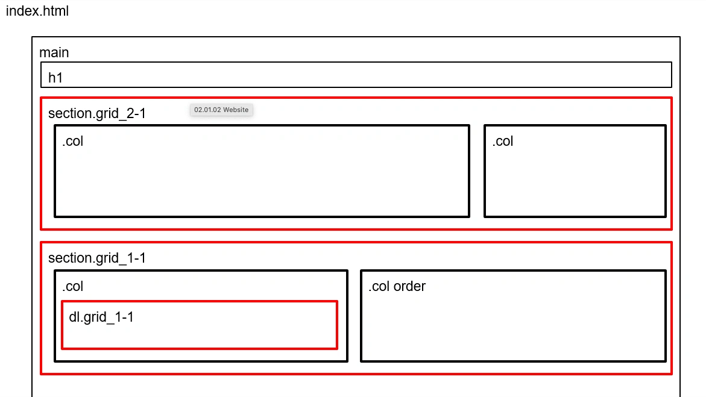

Tema 2
Grundlæggende web
Tema 2 havde til formål at give mig en grundlæggende introduktion til de mest anvendte redskaber i en multimediedesigners værktøjskasse. Her blev jeg introduceret til grundlæggende faglige begreber inden for design af digitale brugergrænseflader, digital indholdsproduktion, digital kommunikation og responsivt webdesign.
Hovedfokusset i dette projekt var, at jeg blev introduceret til VsCode herunder HTML og CSS. Derudover blev jeg introduceret for grundlæggende begreber såsom filformater, designkonventioner, grid, media queries, flex og ikke mindst vigtigheden i en god mappe struktur.
I denne opgave blev alt indholdet til hjemmesiden tildelt, herunder billeder, tekstmateriale og layoutdiagrammer. Dette gav mig en god mulighed for, at opnå en grundlæggende forståelse for især HTML og CSS. Derudover lærte jeg også hvordan man lavede en responsiv hjemmeside ved hjælp af layoutdiagrammer, grid og media queries. Dette var bestemt også den del af opgaven, hvor jeg blev sat allermest på prøve og havde flest komplikationer.
Responsivt design
Wireframes
Her ses det wireframe, vi fik udleveret som illustration til, hvordan designet skulle se ud i både mobilformat og webformat. Som udgangspunkt koder man altid mobil først, og derefter tilpasser man det til webformat. Formålet med responsivt design er at sikre, at brugeroplevelsen forbliver optimal på tværs af forskellige enheder. Et responsivt design opnås ved hjælp af media queries.
Layoutdiagrammer
Her ses det layoutdiagram, vi fik udleveret. Layoutdiagrammer er nyttige, fordi de giver et visuelt overblik over, hvordan en hjemmeside skal se ud. Dette gør også, at kodningsprocessen bliver mere overskuelig, da man kan få et overblik over, hvordan layoutet skal kodes ud fra de HTML-tags, der er defineret på layoutdiagrammet.
Links
Link til opgavenNye kompetencer:
- Introduktion til Figma
- Filformater
- Designkonventioner
- Intro til HTML og CSS - herunder validering
- Responsivt design med tilgangen "mobile first"
- Ophavsret
- Billedbehandling
- Introduktion til Filezilla